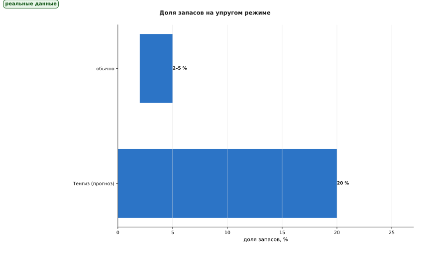

Теория упругой фильтрации помогает полнее использовать упругий запас и оценивать напор воды.
По изменениям давления и дебита можно узнать свойства пласта — это обратная задача.
Обычно упругий режим даёт лишь до 2–5% извлекаемых запасов, но бывают исключения.
Пороговая идея. История давления и дебита позволяет изучать свойства пласта, а размер упругого запаса нельзя универсально оценить по обычной доле добычи. модель
Как это работает
Зачем это нужно
Изучение упругой фильтрации важно и для теории, и для практики. Речь о разработке нефтяных и газовых месторождений. стр. 477
«Изучение гидродинамики упругого режима фильтрации имеет важнейшее значение как для теории, так и для практики разработки нефтяных и газовых месторождений.»
Теория помогает полнее использовать упругий запас для притока к скважинам. стр. 477
«в наиболее полной мере использовать упругий запас пластовых флюидов для обеспечения притока к скважинам,»
Она же помогает оценить, может ли упругая водонапорная система вытеснять флюиды. Это система, связанная с залежью и поддерживающая приток напором воды. стр. 477
«правильно определять потенциальные возможности упругой водонапорной системы для вытеснения флюидов,»
Обратная задача
Есть и обратный путь. По изменениям дебита или давления определяют свойства коллектора. Это обратная задача. стр. 477
«ставить и решать так называемые обратные задачи определения коллекторских свойств пластов по наблюдениям за изменением дебитов или давлений и т.д.»
Сколько даёт упругий режим
При естественном упругом режиме, как правило, добывают лишь до 2–5% извлекаемых запасов. Это запасы, доступные при принятых условиях разработки. стр. 477
«при естественном упругом режиме добывается незначительная часть извлекаемых запасов (до 2–5%).»

Обычно упругий режим даёт до 2–5% извлекаемых запасов. Для Тенгиза прогноз — до 20%: так бывает при особенно большом упругом запасе.
Класс A · реальные данные · нарисовано кодом · стр. 477
Бывают исключения. Особенно большой упругий запас позволяет отобрать существенно большую долю. стр. 477
«Однако известны случаи, когда упругий запас настолько велик»
Пример автора — месторождение Тенгиз. Для него приводят прогноз до 20% запасов нефти на упругом режиме. стр. 477
«Так, например, на крупнейшем месторождении Тенгиз при упругом режиме будет отобрано до 20% запасов нефти.»
Цифры и условия
Обычно на естественном упругом режиме добывают до 2–5% извлекаемых запасов. стр. 477
Для Тенгиза прогноз — до 20% запасов нефти на упругом режиме. стр. 477
Что это значит для данных по книге
В прямой задаче свойства объясняют отклик, в обратной отклик используют для оценки свойств.
Вход
Сведения о режиме и временные ряды давления или дебита.
Выход
Оценка свойств коллектора либо возможностей упругой отдачи.
Где ломается
Обычная доля добычи не переносится на месторождения с особенно большим упругим запасом.
гипотеза Айгерим: испытывать переносимость оценки отдельно по месторождениям и режимам.
Где здесь ручной труд специалиста
Входные данные
Замеры давления, дебиты, данные о запасах.
Ручные шаги
Раздельно сопоставить измерения и прогнозные доли.
Точки суждения
Определить, подтверждает ли история отбора наличие упругого режима.
Время
Зависит от полноты истории.
Типичные ошибки
Считать прогноз для Тенгиза фактом добычи или универсальным ориентиром.
Аналогия модель
Прямая задача похожа на запуск модели с настроенными параметрами; обратная — на подбор параметров по журналу наблюдений.
Где аналогия перестаёт работать: Различные сочетания свойств могут давать схожую историю давления.
Новые понятия
дебит
Объем, отбираемый за единицу времени. модель
упругий запас
Жидкость, извлекаемая за счет упругости породы и жидкости при снижении давления. модель
обратная задача
Определение свойств пласта по изменениям давления или дебита. стр. 477
извлекаемые запасы
Часть запасов, доступная для добычи в принятых условиях разработки. модель
упругая водонапорная система
Связанная с залежью система, поддерживающая приток напором воды и упругостью. модель
Проверь себя
Пропуск в тексте
Заполните пропуск.
Определение свойств коллектора по изменениям дебита или давления называют задачей.
Верный ответ: Определение свойств коллектора по изменениям дебита или давления называют [обратной] задачей.
Все утверждения шага с дословной цитатой автора и страницей книги (по PDF).
Изучение упругой фильтрации важно для теории и практики разработки нефтяных и газовых месторождений. наблюдение
«Изучение гидродинамики упругого режима фильтрации имеет важнейшее значение как для теории, так и для практики разработки нефтяных и газовых месторождений.»
Теория помогает полнее использовать упругий запас для притока к скважинам. вывод
«в наиболее полной мере использовать упругий запас пластовых флюидов для обеспечения притока к скважинам,»
Теория помогает оценивать возможности водонапорной системы вытеснять флюиды. вывод
«правильно определять потенциальные возможности упругой водонапорной системы для вытеснения флюидов,»
В обратной задаче свойства коллектора определяют по изменениям дебита или давления. вывод
«ставить и решать так называемые обратные задачи определения коллекторских свойств пластов по наблюдениям за изменением дебитов или давлений и т.д.»
При естественном упругом режиме как правило добывают лишь до 2–5% извлекаемых запасов. наблюдение
«при естественном упругом режиме добывается незначительная часть извлекаемых запасов (до 2–5%).»
В отдельных случаях особенно большой упругий запас позволяет отобрать существенно большую долю извлекаемых запасов. наблюдение
«Однако известны случаи, когда упругий запас настолько велик»
Для месторождения Тенгиз автор приводит прогноз до 20% запасов нефти на упругом режиме. наблюдение
«Так, например, на крупнейшем месторождении Тенгиз при упругом режиме будет отобрано до 20% запасов нефти.»
Исходный текст урока
Стр. 477 · §3. Математическая модель неустановившейся фильтрации упругой жидкости в упругой пористой среде
Изучение гидродинамики упругого режима фильтрации имеет важнейшее значение как для теории, так и для практики разработки нефтяных и газовых месторождений. Знание этих основ позволяет в наиболее полной мере использовать упругий запас пластовых флюидов для обеспечения притока к скважинам, правильно определять потенциальные возможности упругой водонапорной системы для вытеснения флюидов, ставить и решать так называемые обратные задачи определения коллекторских свойств пластов по наблюдениям за изменением дебитов или давлений и т.д. Как правило, при естественном упругом режиме добывается незначительная часть извлекаемых запасов (до 2–5%). Однако известны случаи, когда упругий запас настолько велик, что позволяет отобрать гораздо больший процент от извлекаемых запасов. Так, например, на крупнейшем месторождении Тенгиз при упругом режиме будет отобрано до 20% запасов нефти.